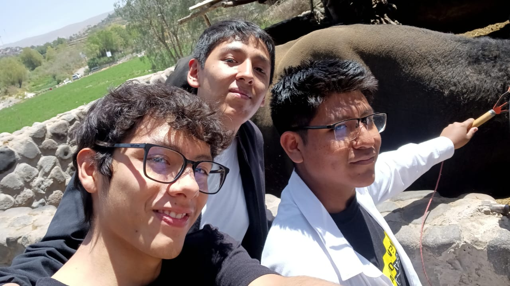
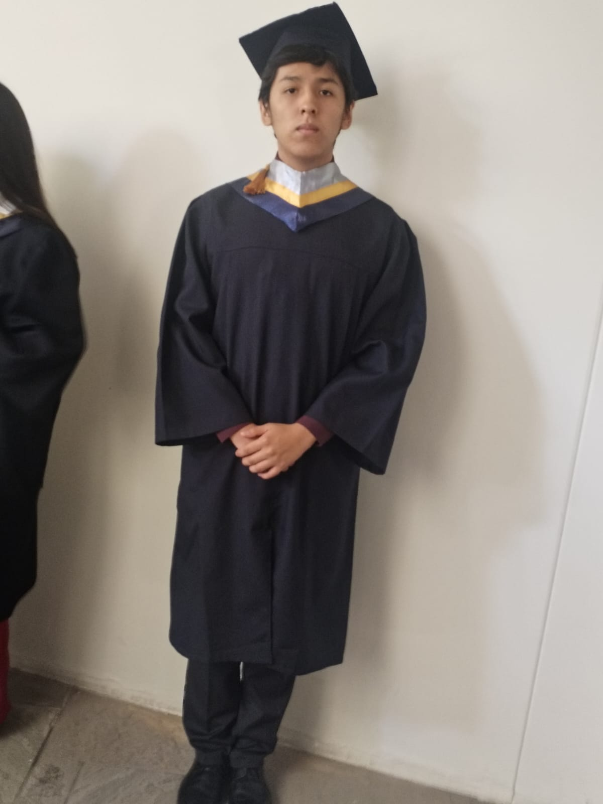

Introducción al Desarrollo Web · 2026B · Laboratorio 01
Jhosue Aguilar — Portafolio académico
01 — quién soy
Sobre mí
Me llamo Jhosue Joaquin Aguilar Pacheco, tengo 17 años y soy de la ciudad de Arequipa.
Estudio en la Universidad Nacional de San Agustín, en la carrera de Ingeniería de Sistemas.
Fuera de las aulas, reparto mi tiempo entre el deporte, los videojuegos y los amigos de siempre.
Estos son los pasatiempos que más disfruto:
Natación, casi todas las semanas.
Básket con amigos del barrio.
Videojuegos en equipo, sobre todo por las noches.
Salidas y viajes cortos con mi grupo de amigos.
Natación, uno de mis deportes favoritos.Sesión de videojuegos con amigos.02 — mi elección
¿Por qué Ingeniería de Sistemas?
Elegí esta carrera por mi afición a la computación y mi gusto por el mundo digital. Me impulsó
la curiosidad de entender cómo, a partir de conjuntos de órdenes que conforman los algoritmos,
se pueden construir grandes programas capaces de manejar y aprovechar enormes cantidades de información.
Más allá de la constante interacción con la tecnología, me sorprende cómo siempre surgen nuevos
avances y algoritmos que cambian y facilitan la forma de crear programas, lo que me motiva a
querer desarrollar los míos propios.
Estas son las razones que más pesaron en mi decisión, en orden de importancia para mí:
El gusto genuino por resolver problemas con lógica y algoritmos.
La posibilidad de crear programas que organizan y aprovechan información real.
El ritmo de innovación constante del área, que nunca deja de sorprenderme.
Las oportunidades de trabajo que ofrece el rubro tecnológico hoy en día.
03 — laboratorio
Proyectos académicos realizados
Resumen de los ejercicios desarrollados durante el curso de Introducción al Desarrollo Web.
Proyectos del curso Introducción al Desarrollo Web — 2026B
Proyecto
Descripción
Tecnologías
Estado
Portafolio semántico
Página principal del portafolio, estructurada con HTML5 semántico.
HTML5, CSS3
Completado
Página del autor
Presentación personal, pasatiempos y galería de fotos.
HTML5
Completado
Formulario de contacto
Formulario accesible con fieldset, labels y validación nativa.
HTML5, CSS3
Completado
Estándares W3C
Investigación sobre el formato vectorial SVG.
HTML5
Completado
04 — momentos
Galería

Tiempo con amigos.

Día de mi graduación.
05 — investigación
Estándar W3C: ¿qué es SVG?
SVG es un formato basado en XML, definido como estándar por el W3C, para describir gráficos
vectoriales bidimensionales. En lugar de almacenar una imagen como una cuadrícula de píxeles,
un archivo SVG describe formas —líneas, curvas, rectángulos, círculos, texto— mediante
coordenadas y atributos matemáticos.
Por qué es relevante en el desarrollo web:
Se escala sin pérdida de calidad en cualquier resolución.
Es texto plano: se puede editar, animar y estilizar con CSS y JavaScript.
Suele pesar menos que un PNG o JPG equivalente.
Es indexable y accesible: admite atributos ARIA y elementos descriptivos.